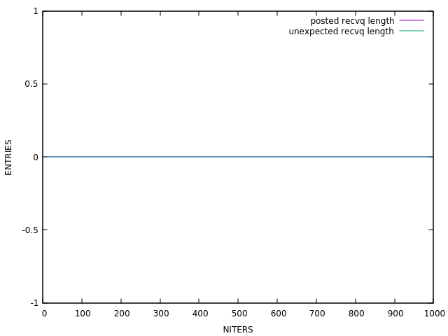
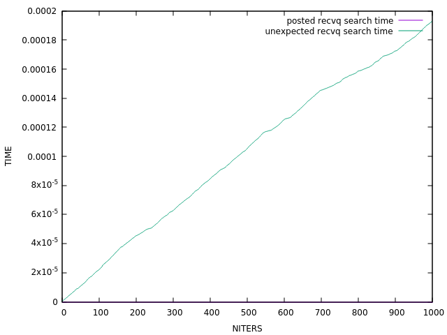
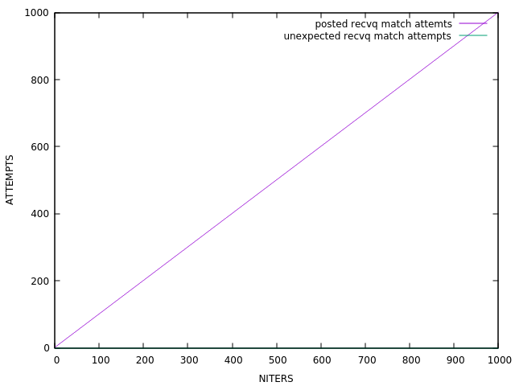

MPI RECVQ Tracker
beta
TASK:
Ping-Pong (N=2, iters=1000)
DESC:
two processes simultaneously send & receive messages from each other

Elapsed time:
20.2s,
Msg/s:
2.0,
MBytes/s:
0.0945
UMQ allocated buffer size ~>
[0 - 0] avg = 0 (0.000 MBytes)